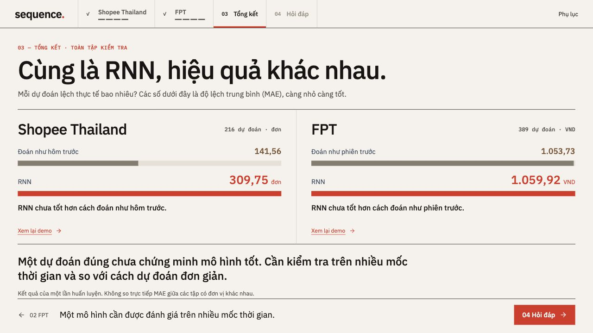

03 / FULL TEST SET
One good prediction is not enough. Compare against a simple baseline.
Lower average error is better

In these saved experiments, the RNN does not beat the previous-value baseline.